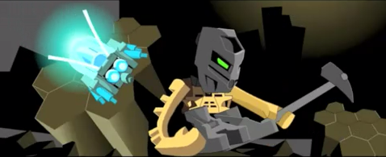

Noble purpose, awful execution
-x-x-x-x-x-x-x-
The Makuta are a species originally created to maintain peace and order in the Matoran Universe. Their task was to produce Rahi - which are necessary for the Universe to function - and plants to fill the Universe with life.
This, however, did not last as the malevolent and arrogant race eventually became corrupted. All thanks to Teridax, the Makuta of Metru Nui, who devised a plan to overthrow Mata Nui and gain control of the Matoran Universe.
-x-x-x-x-x-x-x-
-
-x-x-x-x-x-x-x-
Because of their proud and unheroic nature, the Makuta performed their jobs out of a sense of punishment rather than loyalty. The species was created with an innate character flaw; a belief for themselves to be superior to all other beings.

-x-x-x-x-x-x-x-